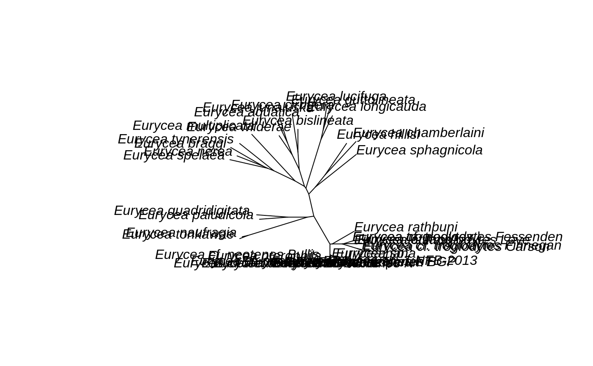

Blast and Small Alignments
index.RmdAt the start of this semester, we discussed molecular and morphological homology assignment. Today we’ll talk about assigning molecular homology in small-scale datasets, such as single or multi-locus Sanger sequenced data. The nice thing about these data is that they are available for free, and pretty abundantly though GenBank.
That’s great - we have a free and clear data source that you can use with no restrictions. The tricky bit is that installation for using BLAST is a little tricky. We’re going to first install an R Package called PhylotaR, which is mostly used for doing taxonomically-informed searches of GenBank - i.e. most of the stuff we are interested in as population bioloigists.
install.packages("remotes")
## Installing package into '/tmp/Rtmp2Do8FS/temp_libpath5e856e37248a'
## (as 'lib' is unspecified)install.packages("taxize")
## Installing package into '/tmp/Rtmp2Do8FS/temp_libpath5e856e37248a'
## (as 'lib' is unspecified)remotes::install_github('dombennett/treeman')
## Skipping install of 'treeman' from a github remote, the SHA1 (d010b485) has not changed since last install.
## Use `force = TRUE` to force installationremotes::install_github('ropensci/outsider')
## Skipping install of 'outsider' from a github remote, the SHA1 (f274e30c) has not changed since last install.
## Use `force = TRUE` to force installationremotes::install_github('ropensci/phylotaR', dependencies = TRUE)
## Skipping install of 'phylotaR' from a github remote, the SHA1 (faa8b8f5) has not changed since last install.
## Use `force = TRUE` to force installationYou’ll also need to install the Blast+ Software. Choose your operating system and the software should walk you through the install.
For the later parts of the lab, please install an aligner (MAFFT) and a phylogeny maximum likelihood estimator, RAXML
Once these are installed, we can start looking for sequences. The first thing we need to do is get a GenBank ID key. To do this, we will use the taxize package. The following function pulls up NCBI so you can register.
taxize::use_entrez()
## Create your key from your (brand-new) account's.
## After generating your key set it as ENTREZ_KEY in .Renviron.
## ENTREZ_KEY='youractualkeynotthisstring'
## For that, use usethis::edit_r_environ()Register a user name, then click on your username to be brought to your profile. On the left-hand side, you can generate an API key for unlimited data access. Next, we will add this to our R Environment file so that R will always know we are us when we try to access data.
usethis::edit_r_environ(scope = "user")
## ● Edit '/home/april/.Renviron'## ● Restart R for changes to take effectThis will open a file called Renviron. Into it, enter:
ENTREZ_key = <your key number here>Save, and restart R.
Next, we’ll get the GenBank taxon identifier for a genus of salamanders, Eurycea. Over the nearly 200 years since Linneaus described the specific binomial, there have been a lot of species defined. GenBank uses a universal ID system so that if a genus refers to a plant and an animal genus, you can still find the correct one.
## ══ 1 queries ═══════════════##
## Retrieving data for taxon 'Eurycea'## ✓ Found: Eurycea
## ══ Results ═════════════════
##
## ● Total: 1
## ● Found: 1
## ● Not Found: 0## [1] "43043"
## attr(,"class")
## [1] "uid"
## attr(,"match")
## [1] "found"
## attr(,"multiple_matches")
## [1] FALSE
## attr(,"pattern_match")
## [1] FALSE
## attr(,"uri")
## [1] "https://www.ncbi.nlm.nih.gov/taxonomy/43043"You’ll see that the unique identifier for Eurycea is 43043. We use this information to set up our GenBank search:
library(phylotaR) dir.create('eurycea')
## Warning in dir.create("eurycea"): 'eurycea' already existssetup(wd = 'eurycea', txid = 43043, ncbi_dr = '/home/april/software/blast/bin', overwrite = TRUE) run(wd = 'eurycea')
## ... Taxise
## ... Download
## ... Cluster
## ... Cluster2The above steps will create a directory called Eurycea, set the GenBank parameters and search for sequences. This step will run for a few minutes. The setup step provides the taxon ID and where the BLAST software lives. Run actually completes the search.
On my machine, this took about 6 minutes. Once you see the output Download, you know it’s running. Feel free to take a 10 minute break then.
These data can be quite large, so PhylotaR doesn’t immediately read in the sequences. We use the read_phylota function to get access to the data:
eury <- read_phylota("eurycea")
Let’s take a look and see what species we have in here:
txids <- get_txids(eury, txids = eury@txids, rnk = 'species') # First, we get the taxon IDs txids <- txids[txids != ''] # And we drop any specimens that are not identified to the species level txids <- unique(txids) #Then we figure out how many uniques we have txnms <- get_tx_slot(eury, txids, slt_nm = 'scnm') # And how many of each unique name we have p <- plot_phylota_treemap(phylota = eury, txids = txids, txnms = txnms, area = 'nsq', fill = 'ncl') print(p)

We can see some species are better represented than others. The next thing we probably want to do is see what loci we have.
# Reduce down to one sequence per taxon reduced <- drop_by_rank(phylota = eury, rnk = 'species', n = 1) # We're going to look at the first cluster first cid <- reduced@cids[[2]] # extract its sequence IDs from Phylota object sids <- reduced[[cid]]@sids # design sequence names for definition line sid_txids <- get_sq_slot(phylota = reduced, sid = sids, slt_nm = 'txid') sid_spnms <- get_tx_slot(phylota = reduced, txid = sid_txids, slt_nm = 'scnm') sq_nms <- paste0(sid_spnms, ' | ', sids) # write out write_sqs(phylota = reduced, outfile = file.path("eurycea", 'test.fasta'), sq_nm = sq_nms, sid = sids)
Now we have a file full of sequences. We probably want to know what these sequences do, though. For this, we can search the annotations. What we want is the definition and feature. This is the EST locus in the large ribsomal subunit. A caution on this is that these can be somewhat non-descript. Sometimes, it is best to search the sequence identifier (like DQ018495.1) on GenBank for more info.
selected <- drop_clstrs(phylota = reduced, cid = cid) smmry <- summary(selected) print(smmry)
## ID Type Seed Parent N_taxa N_seqs Med_sql MAD
## 1 1 subtree DQ018495.1 43043 13 42 1011 0.5487104
## Definition Feature
## 1 gene (0.07), and (0.06) est (1)Crucially, these sequences are unaligned. We will also need to replace the spaces in the taxon names. There are also about ’ characters. Open the test.fasta file. Let’s take a look.
library(ape) system('mafft --auto eurycea/test.fasta > eurycea/alignment.fasta') system(paste0('/home/april/software/standard-RAxML/raxmlHPC -m GTRGAMMA -f a -N 10 -p 1234 -x 1234 -n eury -s eurycea/alignment.fasta'))
Let’s peek at the tree:
library(ape) tree <- read.tree(file = 'RAxML_bestTree.eury') plot(tree, no.margin = TRUE, type = 'unrooted')
